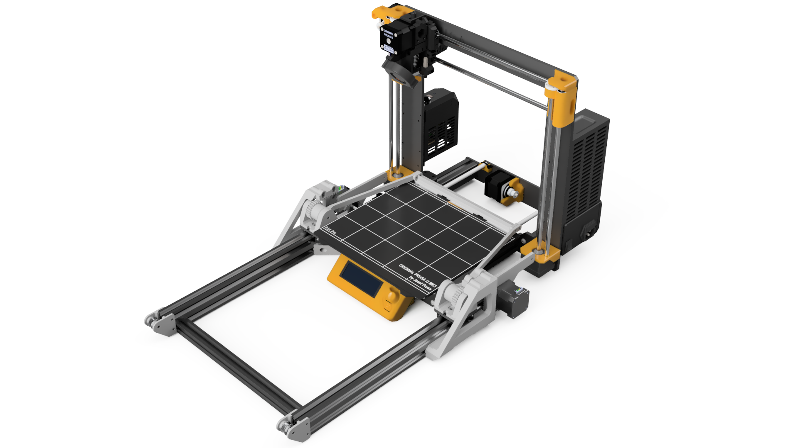
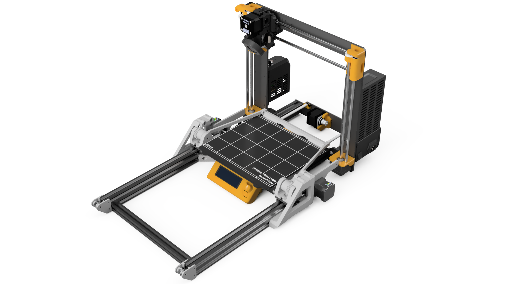
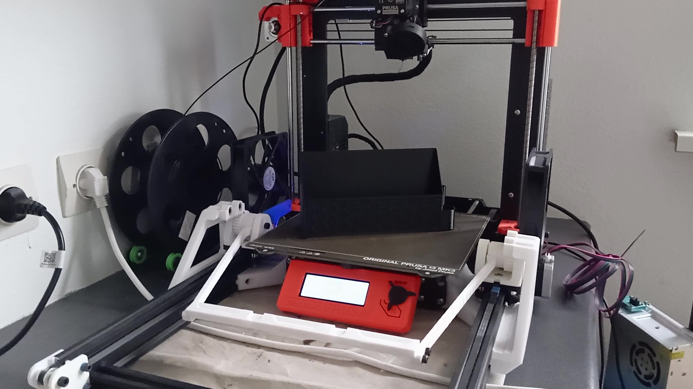
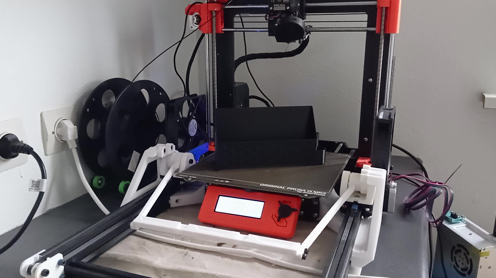
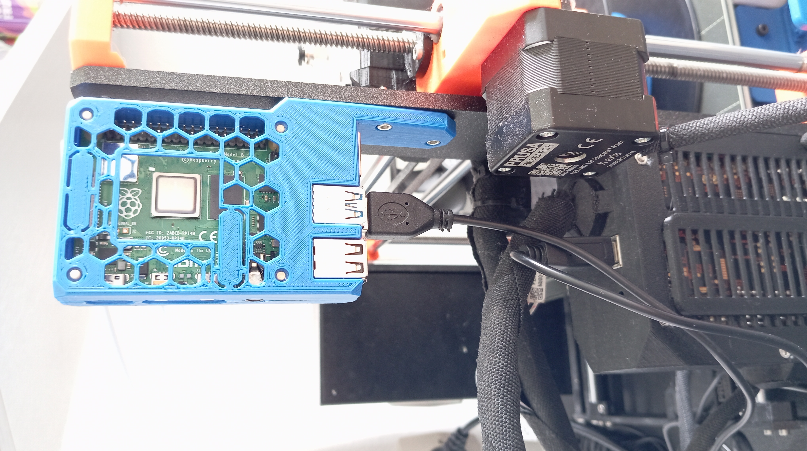

AutoEjector: система автоматического снятия модели с 3D-принтера
 



 

Описание проекта
После нескольких месяцев фриланс-проектов, связанных с 3D-дизайном лабораторного оборудования, мне предложили задачу, напрямую связанную с моей инженерной специализацией. Цель заключалась в создании системы, которая автоматически снимает готовую модель со стола 3D-принтера (в данном случае Prusa MK3S) и запускает следующую печать без участия пользователя.
Проект основывался на существующей концепции с GitHub, но, как часто бывает, на практике всё оказалось гораздо сложнее. Несмотря на оптимистичный прогноз — завершить всё за пару недель, проект затянулся на несколько месяцев и охватил множество аспектов: от доработки механики до разработки собственного OctoPrint-плагина.
Реализация
Аппаратная часть
Работа началась с анализа предоставленных заказчиком материалов. Помимо самого принтера, я получил частично напечатанные детали, филамент и электронику. Уже на стадии подготовки возникли проблемы с совместимостью компонентов печатной платы. Некоторые электронные элементы не имели соответствующих футпринтов в EasyEDA, другие — пришлось заменить, например, разъёмы для вентиляторов.
Определённые компоненты, заявленные в оригинальной схеме, так и не пригодились: реле и LED-порты не использовались вовсе. Выяснилось что некоторых печатных деталей не хватало, я напечатал их самостоятельно.

Посылки со всеми материалами приходили в течение месяца, плюс приходилось несколько раз делать дополнительные заказы.


Первая сборка выявила массу несоответствий: отверстия не совпадали с необходимыми размерами, винты были длиннее необходимых, а у некоторых деталей и вовсе отсутствовали монтажные отверстия. В результате пришлось переработать Некоторые части, такие как крепление моторов для повышения жёсткости и компенсировать несостыковки пластиковыми шайбами разной толщины.


После корректировки механики я заказал переработанную версию печатной платы. Заказ включал в себя три пустые платы и две частично собранные, что обошлось в ~44 евро. Паять пришлось немного — стойки под Arduino и драйверы шаговых моторов.


Электропитание
Питание всей системы было решено взять от блока питания принтера (24 В), для чего мне с трудом пришлось откручивать клеммы. В проекте предусматривалось использование 12-вольтовых вентиляторов, подключённых через линейный стабилизатор напряжения. Эта схема оказалась неработоспособной: стабилизатор перегревался, уходил в защиту и даже после снятия нагрузки не восстанавливался без полной перезагрузки.

Я заменил его на регулируемый понижающий DC-DC-преобразователь на базе LM2596. Он справился с задачей отлично. Однако один из вентиляторов вскоре вышел из строя (предположительно брак), пришлось заказать новый.


Подключение к управляющему ПО
Вся система управлялась через OctoPrint на Raspberry Pi. Arduino подключалась по USB и взаимодействовала с Pi через Serial. Это позволило наладить обмен командами для управления шаговыми моторами и вентиляторами.

Программная часть
Изначально в проекте доступен только скрипт на python и прошивка для Arduino, скрипт не представлял из себя ничего, он буквально не мог работать сам по себе. Прошивка Arduino, в свою очередь, хоть и работала, нуждалась в правках. Мне пришлось:
- Переработать сериал-команды.
- Откорректировать функции работы с шаговыми моторами.
- Реализовать адекватную обработку статуса и обратной связи.
- Отслеживает завершение печати.
- Отдаёт команды Arduino на сброс модели.
- Инициализирует новую печать после подтверждения успешного снятия.
Трудности
Во время разработки не обошлось без технических неудач. Я по ошибке сжёг несколько драйверов шаговых моторов (один — при попытке настройки тока, видимо случайно замкнул контакты щупом мультиметра, два других — при неправильной установке в плату). Один из инцидентов повредил пины SPI на Arduino, но мне удалось перевести их на программную эмуляцию и вручную припаять провода к альтернативным пинам.

Такие моменты существенно тормозили процесс, но, к счастью, заказчик проявил терпение и понимание. Кроме этого, были сотни неудачных попыток и тестов, часть из них я записывал для архива, но те видео не подходят под формат этой статьи.
Результат
В итоге получился рабочий прототип, способный выполнять все заявленные функции. Несмотря на это, проект нельзя назвать законченным: текущая версия больше подходит для опытного пользователя, чем для широкой публики. Следующим шагом, скорее всего, станет разработка второй, доработанной и более надёжной версии.